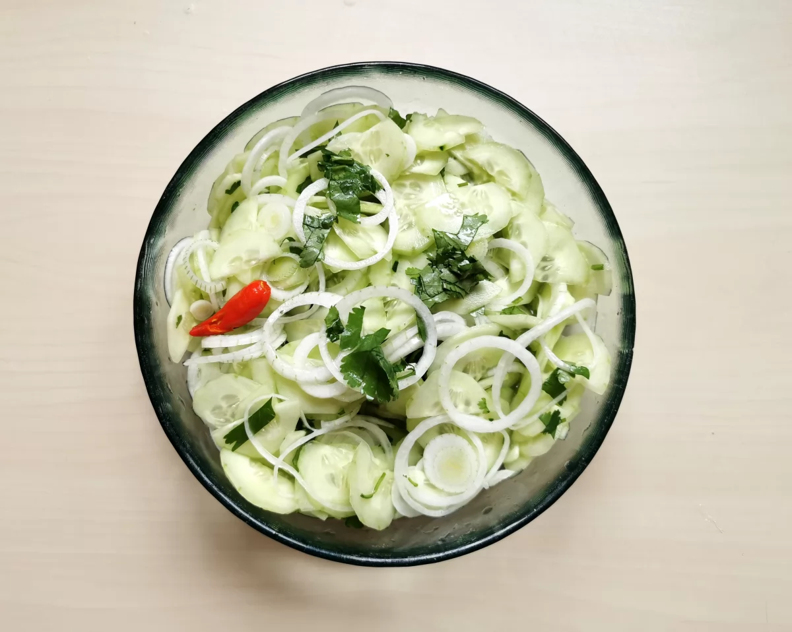
AJAD DE PEPINO10,00€El contraste de ácido, dulce, salado y picante es típico de esta cocina asiática, pero podemos dosificar el picante dejando la guindilla entera o poniendo un trozo muy pequeño.
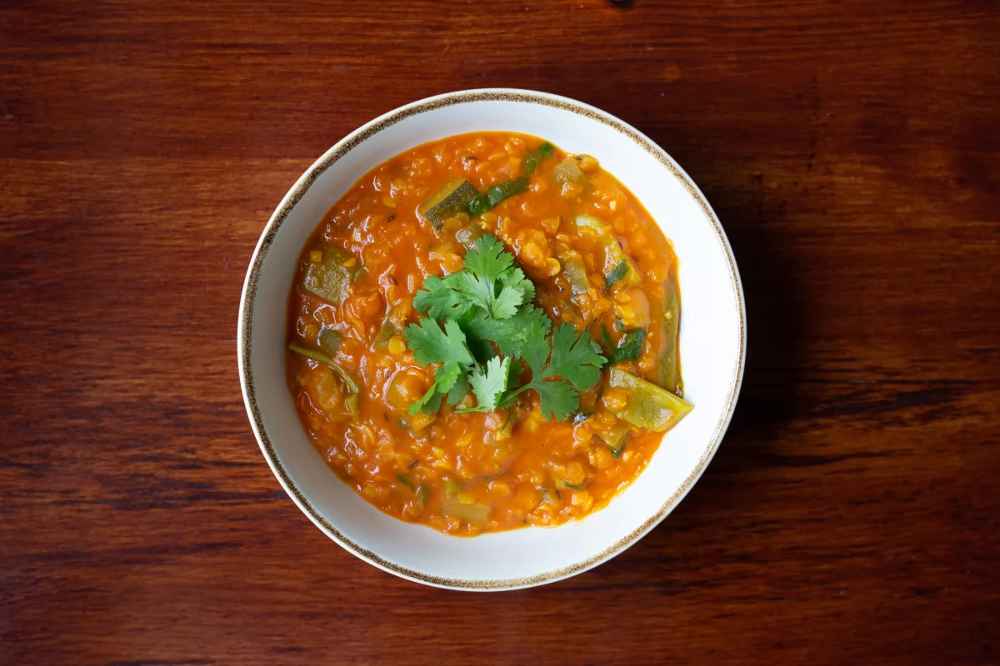
CURRY DE LENTEJAS ROJAS Y VERDURAS10,00€Aromático y colorido, este es un guiso rápido donde las especias son protagonistas. Una buena receta para comer legumbres y verduras de una forma diferente.
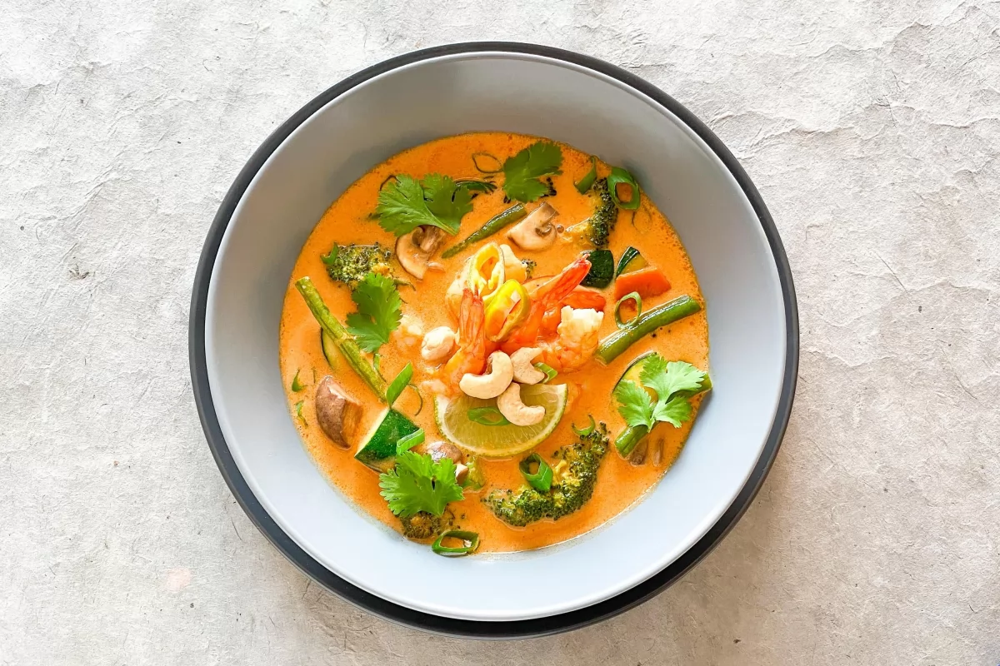
CURRY ROJO CON LANGOSTINOS10,00€Un plato lleno de color y matices que aporta la pasta de curry. Se puede preparar con langostinos o al gusto, con vegetales, tofu, ternera o pato.
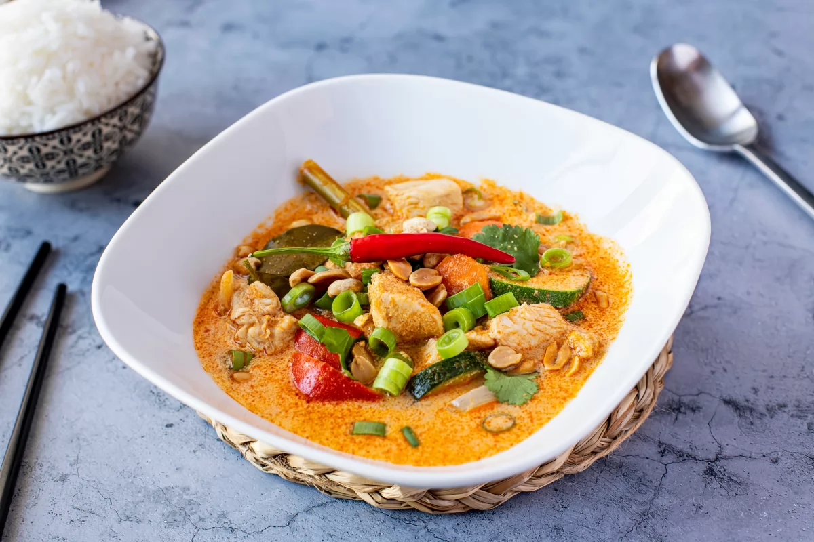
CURRY ROJO DE VERDURAS CON POLLO10,00€El curry rojo de verduras y pollo es uno de los platos más ricos de la cocina tailandesa. Es un plato picante, contundente y lleno de sabor que se acompaña con arroz blanco.
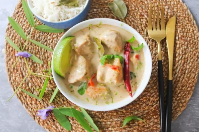
CURRY VERDE DE POLLO10,00€Esta receta de curry verde de pollo thai, vas a descubrir toda una explosión de sabores. Desde el picante al dulce, pasando por el ácido y el salado. Este es un plato fresco y divertido que te llevará a la mismísima Tailandia.
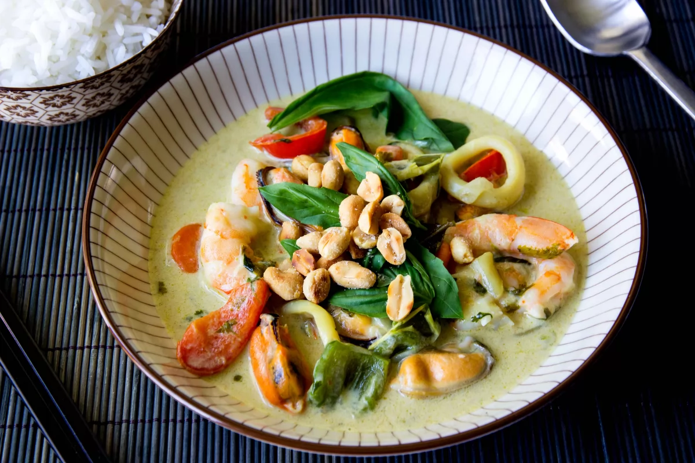
CURRY VERDE DE VERDURAS Y FRUTOS DEL MAR10,00€El curry verde de verduras y frutos del mar es una receta oriental atrevida, picante y llena de matices. Los curris son un hit dentro de la cocina tailandesa y cuanto más picante es más adictivo.
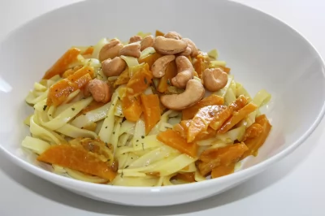
NOODLES CON CALABAZA AL CURRY Y ANACARDOS10,00€Los noodles de arroz y el curry son ingredientes que nos hacen viajar a través de la cocina. Sabores tailandeses e indios nos inspiran en esta ocasión para elaborar unos deliciosos tallarines de arroz con calabaza al curry.
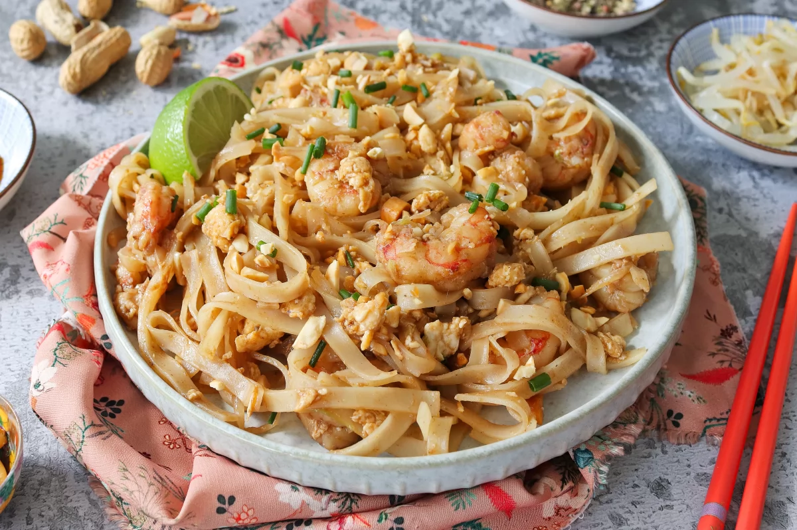
PAD THAI10,00€El pad thai es probablemente el plato más popular de la cocina tailandesa, tanto es así, que ha llegado hasta nosotros. Con esta receta, os enseñamos cómo hacerlo sin tener que salir de casa.
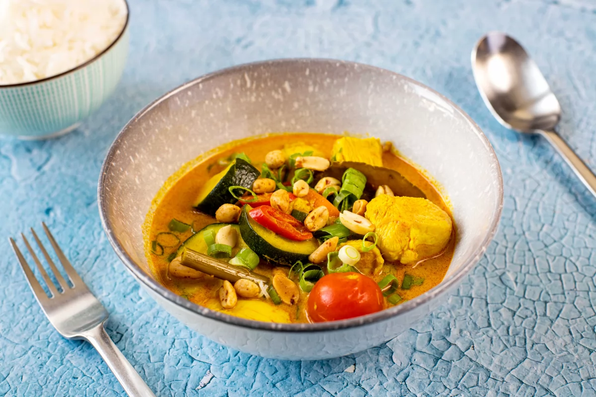
POLLO AL CURRY AMARILLO10,00€El pollo al curry amarillo es una receta de origen tailandés. Es uno de los curris más consumidos y que más se parece al curry indio. De los curris tailandeses es el que menos pica y siempre se acompaña de arroz.
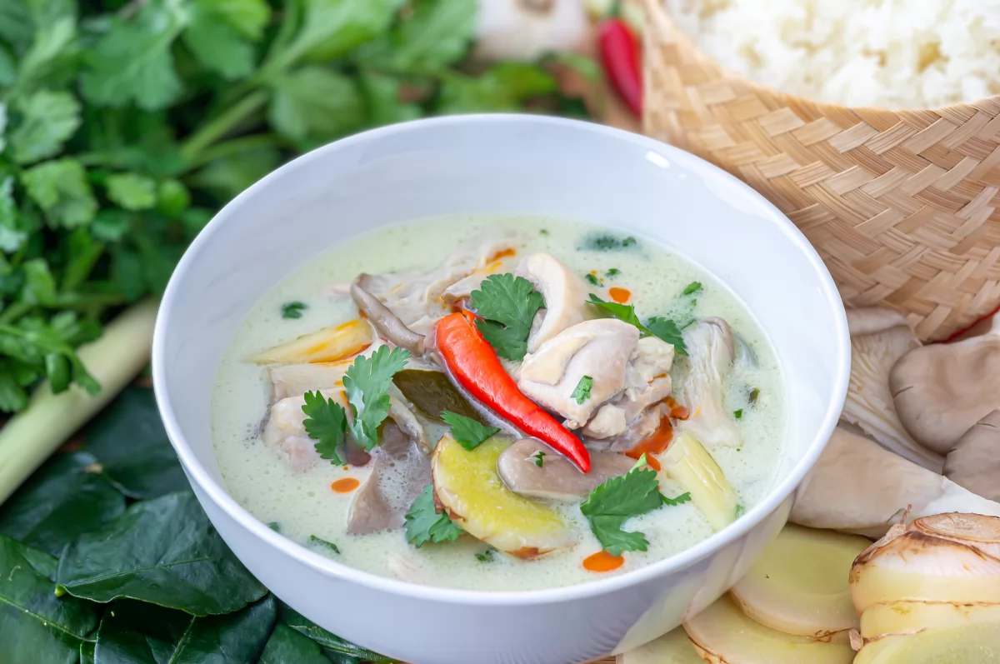
SOPA TOM KHA KAI10,00€Tom kha kai (o Tom kha gai) es uno de los platos más famosos de la cocina tailandesa. Su nombre quiere decir literalmente sopa de galangal y pollo, que son sus ingredientes principales. Para su elaboración se utiliza leche de coco y un conjunto de aromáticos que confieren al plato una mezcla de sabores dulce, agrio y picante muy agradabl
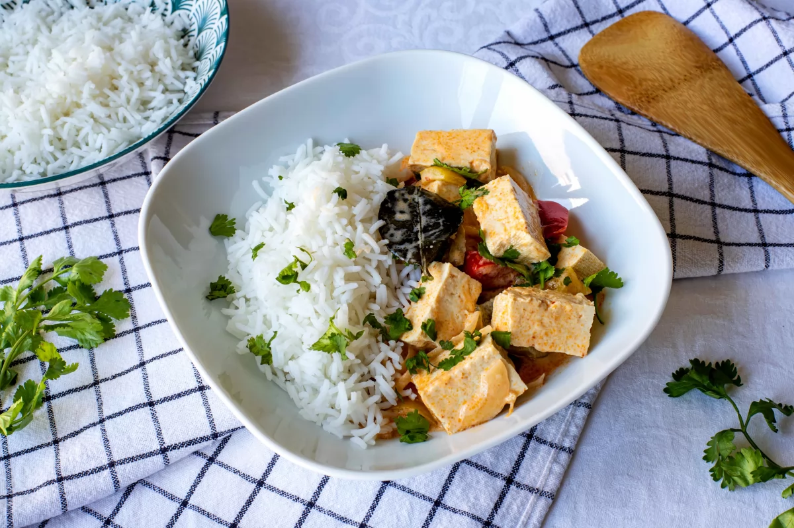
TOFU AL CURRY10,00€El tofu al curry es un plato muy rico y se prepara en poco tiempo. Combina la proteína con las verduras y se puede acompañar perfectamente de arroz o de fideos soba. Se puede hacer más o menos picante, según gustos.
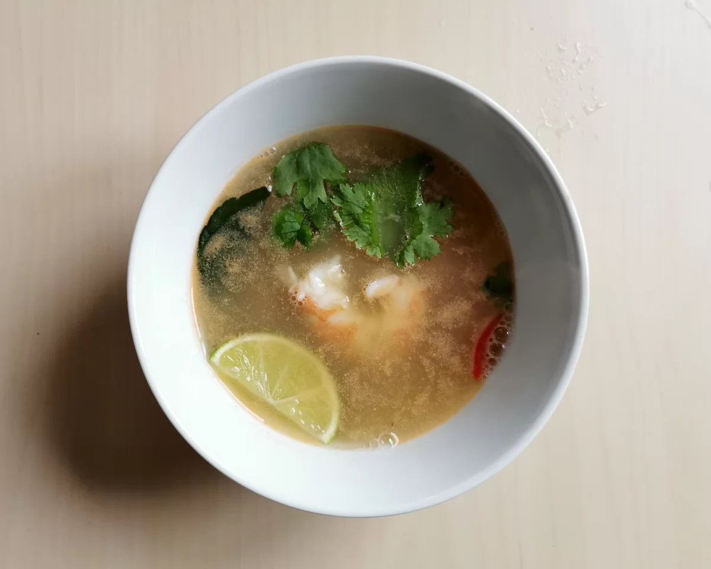
TOM YANG KUNG10,00€El Tom Yam Kung es una sopa tailandesa agria y picante con gambas. Muy aromática gracias a la citronela y a las hojas de lima makrut, el toque picante es balsámico especialmente en invierno.